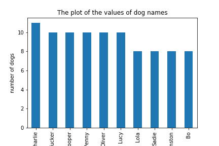

Analysis and insights of the WeRateDogs Twitter archive
Tweets posted in the WeRateDogs archive decreased over time especially after the first two months, with the highest
amount of tweets being on the 2015-12 with 367 tweets and from there the tweets decreased sharply till April of 2016, then steady decrease occurred until the trend stopped in july 2017
The most used source for tweeting is the iphone, with about 98% of tweets being from an iphone totalling about 2032 tweets
A plot of the dog breeds and the number of tweets(dogs) showed that pugs were the most tweeted about dogs, followed by samoyeds.
The dog stage with the most dogs in this archive are dogs in the pupper stage, followed by the doggo stage

A plot of the variation over time of the mean retweet_count and the favorite_count shows a increasing progression,
hence we can say that while over time there were decreasing number of new tweets, most of the previous tweets kept on being retweeted and liked more
The rating_numerator generally were congregated around the rating 8-12, with 12 noticed to be the generally accepted highest rating exluding outliers like 420/10,1776/10etc. So we can say that about 470 dogs were
rated highest
The most used dog name according to our analysis is Charlie with 11 dogs, followed by Cooper,Penny,Lucy,Oliver,Tucker with 10 dogs each and other dog names, this is out of 913 dog names, other than those dogs who were not named.

Also looking at the amount of times dogs in the various stages were retweeted. Dogs in the Doggo stage just barely beats the dogs in the Puppo stage to being the most retweeted dog stage
Then looking at the amount of favorites the various dog stages had, the Puppo dog stage won over the others by a landslide